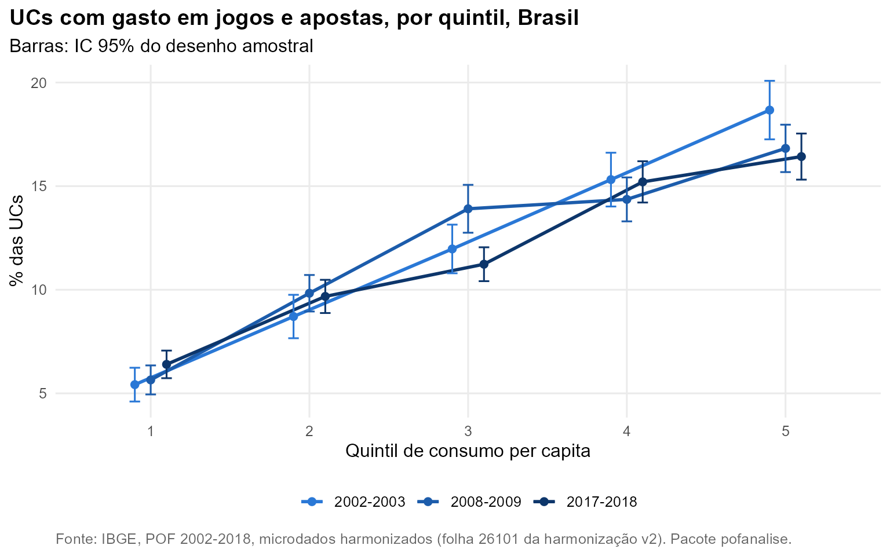

Pergunta. Quem gasta com jogos e apostas (loterias, bingos, apostas), e o que mudou até 2017-2018? A POF registra essa despesa desde 1987, o que dá a linha de base para medir o efeito das apostas online, que se popularizaram depois da última pesquisa.
Método. Folha “26101 Jogos e apostas” da
harmonização v2, estudada com a camada de pesquisa do pacote:
pof_analisar() (prevalência e participação, com IC),
pof_variacao(), pof_modelo() e
pof_concentracao(). Brasil de 2002-2003 em diante; série
das RMs desde 1987.
Quanto e quem
No Brasil, 12,5% das UCs tinham gasto com jogos e apostas em 2017-2018 (IC: 12,0 a 13,0), proporção estável desde 2002-2003 (13,0%). Nas RMs, a série vai de 25,2% em 1987-1988 para 13,3% em 1995-1996. Essa queda precisa de cautela: pode refletir mudança no questionário ou no período de referência, e não foi verificada contra a documentação das edições.
A prevalência cresce com o nível de consumo: 6,4% no 1º quintil e 16,4% no 5º em 2017-2018. É maior nas UCs com homem como pessoa de referência (14,4%, contra 9,8%) e entre 45 e 59 anos (14,6%).

O que muda com os controles
O modelo logístico (pof_modelo(), 2017-2018) estima a
chance de ter gasto com apostas controlando quintil, sexo, cor, idade e
tamanho da UC. A chance no 5º quintil é 3,75 vezes a do 1º (IC: 3,21 a
4,37). UCs chefiadas por mulheres têm chance 32% menor. Com os demais
fatores fixos, a razão de chances para pessoa de referência preta ou
parda é 1,08 (IC 0,98 a 1,19): o intervalo inclui 1, ou seja, não há
efeito significativo da cor; a diferença bruta por cor vem da diferença
de renda e de composição das famílias.
| Termo | Razão de chances | IC 95% | p |
|---|---|---|---|
| quintil2 | 1,67 | 1,46 a 1,92 | < 0,001 |
| quintil3 | 2,07 | 1,80 a 2,39 | < 0,001 |
| quintil4 | 3,14 | 2,73 a 3,61 | < 0,001 |
| quintil5 | 3,75 | 3,21 a 4,37 | < 0,001 |
| sexoMulher | 0,68 | 0,62 a 0,74 | < 0,001 |
| corPreta ou parda | 1,08 | 0,98 a 1,19 | 0,103 |
| idade45 a 59 | 1,38 | 1,24 a 1,53 | < 0,001 |
| idade60 ou mais | 1,39 | 1,25 a 1,54 | < 0,001 |
| idadeAté 29 | 0,80 | 0,69 a 0,94 | 0,005 |
| tamanho2 moradores | 1,55 | 1,34 a 1,79 | < 0,001 |
| tamanho3 a 4 moradores | 1,86 | 1,63 a 2,12 | < 0,001 |
| tamanho5 ou mais moradores | 2,88 | 2,46 a 3,36 | < 0,001 |
Peso no orçamento
Embora as UCs mais ricas apostem com mais frequência, o gasto pesa relativamente mais no orçamento de quem consome menos: o índice de progressividade é negativo em todas as edições (K = -0,044 em 2017-2018), e a parcela do gasto total com apostas feita pelos 40% com menor consumo subiu de 9,3% para 12,7%. Ver Progressividade dos gastos.
O que mudou de 2002 para 2017
| Corte | Grupo | 2002-2003 | 2017-2018 | Diferença (p.p.) | p | Significativa |
|---|---|---|---|---|---|---|
| quintil | 1 | 5,4 | 6,4 | 1,0 | 0,069 | não |
| quintil | 2 | 8,7 | 9,7 | 1,0 | 0,149 | não |
| quintil | 3 | 12,0 | 11,2 | -0,7 | 0,313 | não |
| quintil | 4 | 15,3 | 15,2 | -0,1 | 0,896 | não |
| quintil | 5 | 18,7 | 16,4 | -2,2 | 0,014 | sim |
| sexo | Homem | 14,1 | 14,4 | 0,3 | 0,548 | não |
| sexo | Mulher | 9,7 | 9,8 | 0,1 | 0,898 | não |
| cor | Branca | 14,5 | 13,4 | -1,1 | 0,069 | não |
| cor | Preta ou parda | 11,1 | 11,8 | 0,7 | 0,141 | não |
| idade | 30 a 44 | 12,6 | 10,8 | -1,8 | 0,004 | sim |
| idade | 45 a 59 | 15,8 | 14,6 | -1,3 | 0,105 | não |
| idade | 60 ou mais | 12,9 | 13,5 | 0,6 | 0,445 | não |
| idade | Até 29 | 8,8 | 8,0 | -0,8 | 0,262 | não |
Variações significativas a 5%: quintil 5 (-2,2 p.p.); idade 30 a 44 (-1,8 p.p.). No 1º quintil a prevalência vai de 5,4% para 6,4% (p = 0,069). Esta é a linha de base para medir o efeito das apostas online quando sair a POF 2024-2025.
Reproduzir
dados <- pof_carregar(c(2002, 2008, 2017), dir, itens = list(apostas = "26101"))
plot(pof_analisar(dados, "apostas", por = "quintil"))
pof_modelo(dados["2017-2018"], "apostas", ~ quintil + sexo + cor + idade + tamanho)
pof_variacao(pof_analisar(dados, "apostas", por = "quintil"), "2002-2003", "2017-2018")